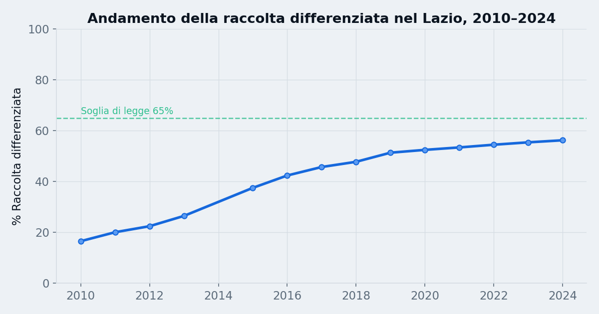
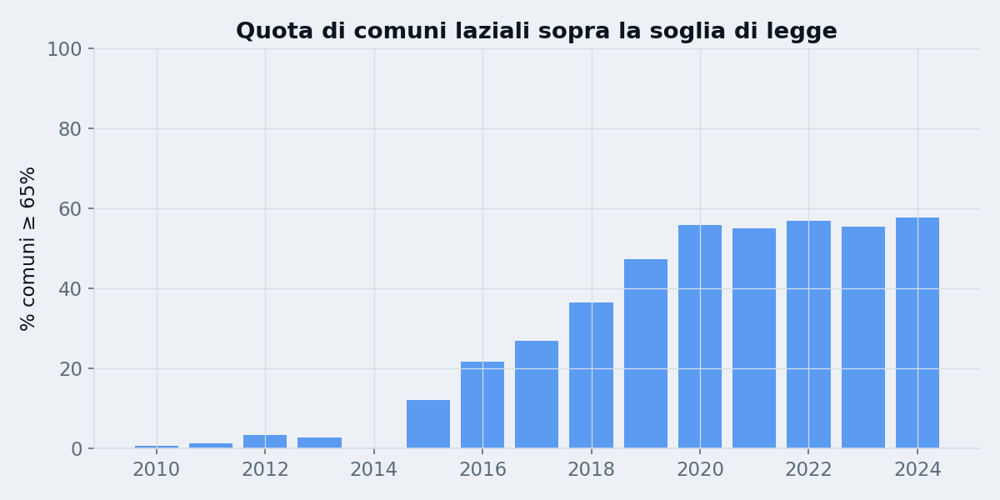
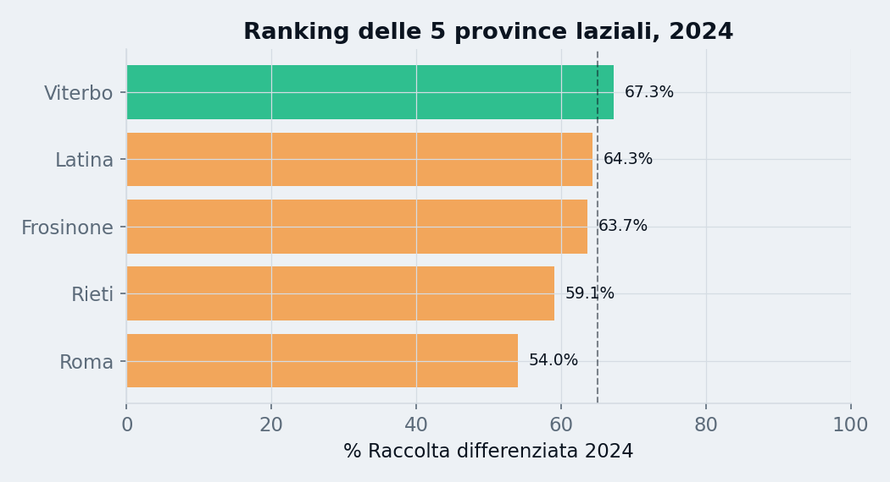
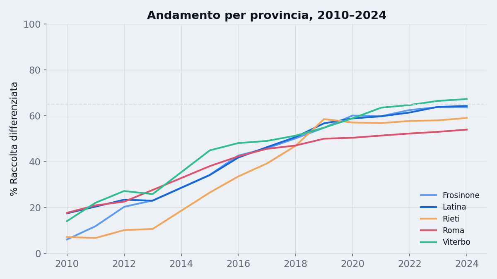
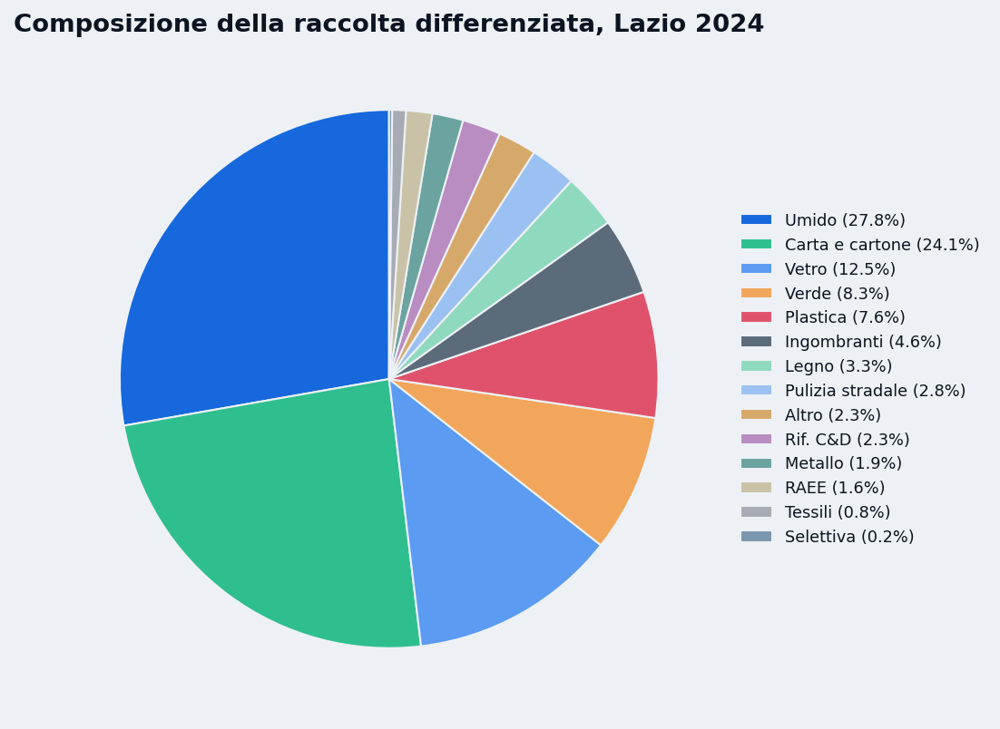
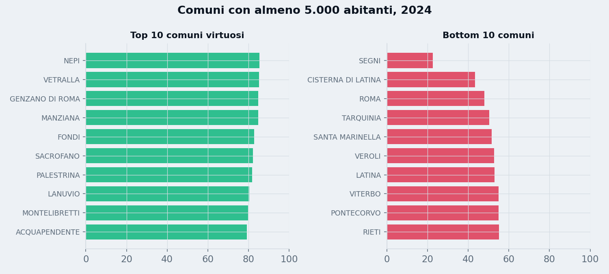

Mappa interattiva della percentuale di raccolta differenziata dei rifiuti urbani nei comuni del Lazio, dal 2010 al 2024.
Il colore indica la percentuale di raccolta differenziata:
rosso (bassa RD) →
giallo (media) →
verde (alta RD).
La soglia di legge per i comuni italiani è 65%.
Dati elaborati da file CSV ISPRA, unione anni 2010–2024.
Mappa realizzata nell'ambito del progetto Monterotondohub, ispirata nella struttura a PalermoHub, con il supporto di Claude AI (Anthropic) per lo sviluppo del codice.
Il codice di questa applicazione è rilasciato sotto licenza CC BY-SA 4.0. I dati mantengono la licenza della fonte originale (ISPRA – Catasto Rifiuti), citata sopra.
Cosa raccontano i dati ISPRA su 378 comuni e 15 anni
Nel 2010 il Lazio raccoglieva in modo differenziato circa il 16,5% dei rifiuti urbani. Nel 2024 la quota è arrivata al 56,2%: in quindici anni il rapporto si è più che triplicato e l'indifferenziato avviato a smaltimento è sceso del 54%.

| Anno | Popolazione | Totale RU (t) | Totale RD (t) | % RD | RU pro-capite (kg/ab) |
|---|---|---|---|---|---|
| 2010 | 5.728.688 | 3.399.808 | 561.988 | 16,5% | 594 |
| 2015 | 5.888.472 | 3.023.402 | 1.134.109 | 37,5% | 513 |
| 2017 | 5.896.693 | 2.961.867 | 1.353.906 | 45,7% | 502 |
| 2020 | 5.720.796 | 2.815.268 | 1.476.774 | 52,5% | 492 |
| 2022 | 5.707.112 | 2.859.769 | 1.557.976 | 54,5% | 501 |
| 2024 | 5.710.272 | 2.916.082 | 1.639.647 | 56,2% | 511 |
La legge italiana fissa al 65% il livello minimo di raccolta differenziata per ogni comune. Nel 2010 la rispettavano solo 2 comuni su 345 con dato disponibile; nel 2024 sono 202 su 350 (57,7%). La crescita è stata costante, con un'accelerazione netta tra il 2015 e il 2020.

| Anno | Comuni con dato proprio | Comuni ≥ 65% | % in regola |
|---|---|---|---|
| 2010 | 345 | 2 | 0,6% |
| 2015 | 321 | 39 | 12,1% |
| 2017 | 327 | 88 | 26,9% |
| 2018 | 334 | 122 | 36,5% |
| 2020 | 338 | 189 | 55,9% |
| 2022 | 346 | 197 | 56,9% |
| 2024 | 350 | 202 | 57,7% |
Quattro province su cinque superano oggi la soglia di legge. Il dato di Roma merita una sottolineatura: pesa per oltre tre quarti dei rifiuti regionali ed è il più indietro, anche se comunque appena sotto soglia. Senza la provincia di Roma, il Lazio nel 2024 sarebbe al 64,2%.

| Provincia | % RD 2024 | Stato |
|---|---|---|
| Viterbo | 67,3% | 🟢 Oltre la soglia |
| Latina | 64,3% | 🟡 Appena sotto |
| Frosinone | 63,7% | 🟡 Appena sotto |
| Rieti | 59,1% | 🟡 Sotto la soglia |
| Roma | 54,0% | 🟡 Sotto la soglia |

Le 1,64 milioni di tonnellate raccolte separatamente nel 2024 sono dominate dall'organico (27,8%), seguito da carta e cartone (24,1%) e vetro (12,5%).

| Frazione | Tonnellate 2024 | Quota su RD |
|---|---|---|
| Frazione umida (organico) | 455.401 | 27,8% |
| Carta e cartone | 395.535 | 24,1% |
| Vetro | 205.110 | 12,5% |
| Verde | 135.707 | 8,3% |
| Plastica | 124.077 | 7,6% |
| Ingombranti a recupero | 75.975 | 4,6% |
| Legno | 53.887 | 3,3% |
| Pulizia stradale | 45.549 | 2,8% |
| Altro | 37.882 | 2,3% |
| Rifiuti C&D | 37.865 | 2,3% |
| Metallo | 30.373 | 1,9% |
| RAEE | 25.777 | 1,6% |
| Tessili | 13.492 | 0,8% |
| Selettiva | 3.017 | 0,2% |
Considerando solo i comuni con almeno 5.000 abitanti, il primo posto va a Nepi (85,4%), seguito a un soffio da Vetralla. Sei dei dieci più virtuosi sono in provincia di Roma — la stessa provincia col dato medio più basso: anche qui il problema non è territoriale ma di scala, con la Capitale che pesa molto sulla media.

| # | Comune | Prov. | % RD |
|---|---|---|---|
| 1 | Nepi | VT | 85,4% |
| 2 | Vetralla | VT | 85,1% |
| 3 | Genzano di Roma | RM | 84,9% |
| 4 | Manziana | RM | 84,7% |
| 5 | Fondi | LT | 82,9% |
| 6 | Sacrofano | RM | 82,1% |
| 7 | Palestrina | RM | 81,9% |
| 8 | Lanuvio | RM | 80,4% |
| 9 | Montelibretti | RM | 79,7% |
| 10 | Acquapendente | VT | 79,3% |
| # | Comune | Prov. | % RD |
|---|---|---|---|
| 1 | Segni | RM | 22,6% |
| 2 | Cisterna di Latina | LT | 43,3% |
| 3 | Roma | RM | 48,0% |
| 4 | Tarquinia | VT | 50,4% |
| 5 | Santa Marinella | RM | 51,6% |
| 6 | Veroli | FR | 52,8% |
| 7 | Latina | LT | 53,0% |
| 8 | Viterbo | VT | 54,9% |
| 9 | Pontecorvo | FR | 54,9% |
| 10 | Rieti | RI | 55,1% |